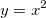

詳細はnewbook Xファンクションを参照してください。
行数numRowsを持つ名前のデータセットまたはワークシートを作成します。NumRowsは、必要と予想される行の最大数にする必要があります。各データセットは値と属性に関連付けられています。データセットの値と属性を変更するには、setコマンドを使用します。データセットのワークシートを表示するには、edit dataset コマンドを使用します。
詳細はnewbook Xファンクションを参照してください。 |
creat name [option] [numRows]
構文: create name -c numRows
Yデータセット（値は全て0）とそれに関連するXデータセットを作成します。このデータをプロットするには、XとYの両方に値を指定する必要があります。Yデータセットはnameと呼ばれます。Xデータセットはname_Aと呼ばれます。注意: nameにアンダースコア " _ "が含まれている場合、Xデータセットに名前を付けるときにそれ以降の文字は無視されます。 つまり、nameがdata1_testなら、Xはdata1_Aと呼ばれます。
構文: create name -cd numRows
-cオプションと似ていますが、-cdはデータセットのすべての既存のプロットが破棄されるきにデータセットを破棄します。これは子ウィンドウの破棄、ページのOriginCのDestroy()メソッド、およびLabTalkwin -cコマンドの使用時に適用されます。
create test_b -cd 10; test_a=data(1,1000); test_b=normal(1000); win -t plot; layer -i test_b;
@DLDGの値を0に設定することで、ルーズデータセットの破棄を無効にできます。
構文: create name -d numRows
データセットと、name_Aという名前の関連するXデータセットを作成します。データセットをアクティブなグラフレイヤに散布図としてプロットします。
構文: create name -dd numRows
-dオプションと似ていますが、-ddはデータセットのすべての既存のプロットが破棄されるきにデータセットを破棄します。これは子ウィンドウの破棄、ページのOriginCのDestroy()メソッド、およびLabTalkwin -cコマンドの使用時に適用されます。
@DLDGの値を0に設定することで、ルーズデータセットの破棄を無効にできます。
構文: create name -f npts formula
関数を作成します。この表記法を使用して関数を作成することもできますが、より単純な方法は次の通りです。 myFunc(x)=3+3*sin(x);
例えば、次のスクリプトを実行して、数式

を使用してmyquadという関数を作成し、200個のデータポイントを生成し、関数を直線としてプロットします。create myquad -f 200 "x^2"; plotxy myquad 200; //X軸とY軸を再スケール sec -p 1; layer -a;
Note: nptsはデータセットサイズとして100以上の入力整数値を取ります。
構文: create name -fp npts formula min max
nptsはルーズデータセットの点数であり、formulaは変数tを独立変数として使用する必要があります。minとmaxはルーズデータセットの最小値と最大値です。ルーズデータセットを作成した後、Xファンクション関数plotxyを使用して2Dパラメトリック関数グラフを作成することができます。
create mydata -fp 50 "t*cos(t)" 0 "2*pi"; plotxy mydata 201;
構文: create name -fp2 npts formula min max npts2 min2 max2
nptsは第一次元の点数（列数、独立変数u）であり、formulaは変数uとvを独立変数として使用する必要があります。minとmaxはそれぞれ第一次元の値の最小値と最大値です。npts2、min2、max2は（第一次元と同様に）第二次元の点数（行数、独立変数v）と最小値、最大値です。2Dルーズデータセットを作成した後、Xファンクションplotmを使用して3Dパラメトリック関数グラフを作成することができます。
create myz -fp2 20 "(v*v*cos(u)*cos(u)+v*v*sin(u)*sin(u))/2" 0 "2*pi" 50 0 5; plotm myz 103;
構文: create name -m numRows
データポイントシンボルタイプとして縦方向の両矢印に関連付けられたデータセットを作成します。それ以外の場合は、上記の-cと同じです。
構文: create name -mfp ZData XData YData "XVar,YVar"
指定されたname（存在する場合は列挙）の行列ブックが作成され、行列シートには3つの行列オブジェクトが含まれます。3つの行列オブジェクトは、指定された2Dルーズデータセット、ZData、XData、YDataのデータを持ちます。2Dルーズデータセットは、create-fp2コマンドを使用して作成できます。XVarとYVarは2つの独立変数名として使用されます。Xファンクションplotmを使用して、作成された行列から3Dパラメトリック関数グラフを作成できます。
create myx -fp2 20 v*cos(u) 0 6.28 50 0 5; create myy -fp2 20 v*sin(u) 0 6.28 50 0 5; create myz -fp2 20 (v*v*cos(u)*cos(u)+v*v*sin(u)*sin(u))/2 0 6.28 50 0 5; create Func -mfp myz myx myy "u,v"; plotm im:=[Func]1!1 plot:=103 x:=2 y:=3;
構文: create name -mfph ZData XData YData "XVar,YVar"
指定されたname（存在する場合は列挙）の行列ブックが作成されます。ウィンドウは非表示になります。行列シートには3つの行列オブジェクトが含まれ、それらのオブジェクトにはそれぞれ、指定された2DルーズデータセットZData、XData、YDataのデータが含まれます。2Dルーズデータセットは、create-fp2コマンドを使用して作成できます。XVarとYVarは2つの独立変数名として使用されます。Xファンクションplotmは、作成された行列から3Dパラメトリック関数グラフを作成するのに使用できます。
例については、plot 3D box and sphere using plotmを参照してください。
構文: create name -n numRows
空のYデータセットを作成します（関連するX値なし）。プロットするときは、Xの初期値を1、増分を1と仮定します。これらのX属性を変更するには、setコマンドを使用します。データセットを表示するには、edit datasetnameコマンドを使用します。
構文: create name -nd numRows
-nオプションと似ていますが、-ndはデータセットのすべての既存のプロットが破棄されるきにデータセットを破棄します。これは子ウィンドウの破棄、ページのOriginCのDestroy()メソッド、およびLabTalkwin -cコマンドの使用時に適用されます。
@DLDGの値を0に設定することで、ルーズデータセットの破棄を無効にできます。
必要なOriginのバージョン: 9.1 SR0以降
構文: create name -nrs extract_rule [range_string, designation, scope_range_string]
このコマンドは、名前付き範囲を使用して仮想データセットを作成します。仮想データセットの値は、以下の抽出ルールによって決定されます。
| 値 | 意味 |
|---|---|
| 0 | 列で連結します。選択したセルブロック内の値を列方向で結合します。 |
| 1 | 行で連結します。選択したセルブロック内の値を行方向に結合します。 |
| 2 | 行の平均。選択範囲の各行の平均値を使用します。 |
| 3 | 行の標準偏差。選択範囲の各行の標準偏差を使用します。 |
| 4 | 偶数行。選択範囲の偶数行の値を使用します。 |
| 5 | 奇数行。選択範囲の奇数行の値を使用します。 |
オプションでrange_stringを指定して、選択範囲を参照することもできます。指定しない場合は、現在の選択範囲が使用されます。scope_range_stringを指定して、使用するワークシートを参照することもできます。指定しない場合、複数範囲の最初の範囲のワークシートが使用されます。
次の例では、Book1 Sheet1の最初の行をmyvsx、2行目をmyvsyとして作成し、これらの2つのデータセットをそれぞれXとYとして、作図に使用します。
create myvsx -nrs 1 "[Book1]Sheet1![1]:[1]"; create myvsy -nrs 1 "[Book1]Sheet1![2]:[2]"; plotxy (myvsx, myvsy);
もう1つの例では、列1行2のセルから列3行4のセルまでのセルブロックを持つmyvsboxを作成します。
create myvsbox -nrs 1 "[Book1]Sheet1!1[2]:3[4]"; win -t p box; layer -i206 myvsbox;
構文: create name -s numRows
文字列データセットを作成します。
関連項目： dataset -a
構文: create name -t numRows
ワークシートに関連付けられておらず、プロットできないデータセットを作成します。
構文: create name -vsshdf worksheetrange uidShDF;
文字列worksheetrangeは仮想データセットnameのベースとなるワークシート列、uidShDは既存のShDF（共有データフィルタ）のUIDです。
fname$ = System.path.program$ + "Samples\Statistics\automobile.dat"; newbook; impASC; worksheet -shdf uidShDF [[D:3:"between(16,23)"]]; //共有データフィルタを指定 create myshdfvsy -vsshdf col(F) uidShDF; //既存のShDFを使用して仮想データセットを作成 plotxy iy:=(C,myshdfvsy) plot:=202;
構文: create name -w numRows [colName(s)]
numRowsの後に列名を指定できます。列名を指定する場合は、少なくとも2列を指定する必要があります。Windowコマンドを使用して、特定のテンプレートから作成されたワークシートを開きます。
構文: create name -wd numRows [colName(s)]
データセットを作成しますが、ワークシートは作成しません。データセットをテキストおよび数値として書式設定します。
構文: create name -wdn numRows [colNume(s)]
データセットを作成しますが、ワークシートは作成しません。データセットを数値として書式設定します。
以下の例では、いくつかのルーズデータセットを作成し、Xファンクションを使ってアクティブなシートのcol(2)からヒストグラムを作成します。
create histgm -wdn 10 bincenter counts; freqcounts irng:=col(2) rd:=tmptr; histgm_bincenter=tmptr.FreqCount.BinCenter; histgm_counts =tmptr.FreqCount.Counts; plotxy (histgm_bincenter, histgm_counts) p:=203;
構文: create name -wh numRows[colNume(s)]
非表示のワークシートを作成します。データセットをテキストおよび数値として書式設定します。ワークシートを表示するには、edit datasetname コマンドを使用します。
構文: create name -whn numRows[colName(s)]
データセットを数値に設定して非表示のワークシートを作成します。ワークシートを表示するには、edit datasetname コマンドを使用します。
create tmpbook -whn 10 aa bb;
構文: create name -wn numRows[colName(s)]
データセットを数値に設定してワークシートを作成します。
構文: create name -x numRows
データポイントシンボルタイプとして垂直線に関連付けられたデータセットを作成します。それ以外の場合は、上記の-cと同様です。
構文: create name -xd numRows
-xオプションと似ていますが、-xdはデータセットのすべての既存のプロットが破棄されるきにデータセットを破棄します。これは子ウィンドウの破棄、ページのOriginCのDestroy()メソッド、およびLabTalkwin -cコマンドの使用時に適用されます。
@DLDGの値を0に設定することで、ルーズデータセットの破棄を無効にできます。
非表示のワークブックに100点のXYデータセットを作成します。ワークブック名とY列名が指定され、X列名はデフォルトでAになります。
// ワークブック名 = '''Exp1''', Y列名 = '''mVolts''' create Exp1_mVolts -c 100;
さまざまワークシートを作成します。
//Miscという名前の4列のワークシート create Misc -w 11 Alpha Beta Gamma Delta; // Hidden1という名前の2列の非表示ワークシート //（プロジェクトエクスプローラでも非表示） create Hidden1 -wd 13 A1 A2; //Hidden2という名前の3列の非表示ワークシート //（プロジェクトエクスプローラには表示） create Hidden2 -wh 23 AAA A2Z ZZZ; // Numbersという名前の数値形式の3列のワークシート create Numbers -wn 31 PY1 PY2 PY3;
次のスクリプトは文字列データセットを作成し、データセットの書き込みと読み取りを行います。
create mystrings -s 10; MyStrings[1]$=Hello; MyStrings[10]$=Goodbye; for(ii = 1;ii <= 10;ii++) { %A=MyStrings[ii]$; type $(ii) \x3D %A; };
アクティブなグラフレイヤに自身を追加するXYデータセットを作成します。より良いアプローチも示しました。
// 古い方法ではキューイング遅延が必要 win -t plot 201 Scatter; // グラフを作成 create Plot_Me -d 50; // ワークシートを作成 Plot_A = data(1,50); // X列の値を設定 Plot_Me = uniform(50); // Y列の値を設定 queue { set %C -e 50; layer -a; } doc -uw; // より簡単な、非表示ワークシートを使用する方法 win -t plot 201 Scatter; create Plot -wh 50; Plot_A = data(1,50); Plot_B = uniform(50); layer -i Plot_B; layer -a;
Yデータを作成し、行インデックスに対してプロットします。
create Singular -n 7; singular = {1,6,2,5,3,0,7}; win -t plot linesymb; layer -i singular; layer -a;
プロット指定なしで一時データセットを作成します。
create Lookup -t 7; Lookup = {-1,1,1,1,1,1,-1}; loop(ii,1,7) { if(lookup[ii]==1) type Today is a work day.; else type Take the day off.; }